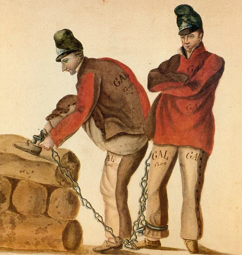

При написании обещанного поста по галерным рабам из Северной Африки возникли некоторые вопросы, которые оказалось не просто решить. Чтобы не делать работу в спешке, отложим пока эту тему. Перейдем к другой, не менее интересной теме – использование на галерах XVI-XVII веков, в частности, на галерах эпохи Людовика XIV, каторжников. Итак,
Каторжники на галерах
При Людовике XIV, чтоб не заходить слишком далеко, - по желанию короля, и желанию весьма разумному, - было решено создать флот. Идея сама по себе хорошая, но посмотрим, какими средствами она осуществлялась. Флот немыслим,
если наряду с парусными судами, являющимися игрушкой ветра, не существует судов, свободно передвигающихся в любом направлении с помощью весел или пара. Место нынешних пароходов в те времена занимали во флоте г
Следовательно, нужно было обзавестись галерами. Но галеры не могут обойтись без гребцов. Следовательно, нужно было обзавестись гребцами. Кольбер, при посредстве провинциальных интендантов и парламентов, увеличивал, с
мог, число каторжников. Судейские весьма услужливо шли ему в этом навстречу. Человек не снял шляпы перед проходившей м
улице, и если только оказывалось, что он уже дост
В годы правления Людовика XIV осужденным на галеры пожизненно ставили клеймо с буквами G A L. Этот знак означал осуждение на галеры за тяжкое преступление. В первой четверти XVIII века власти Франции посчитали, что наказания за некоторые виды преступлений были недостаточно суровы, поэтому вышел декрет, согласно которому все случаи воровства из церквей, совершенные мужчиной или женщиной, впредь будут наказываться выжиганием клейма с буквой V (vol, вор; voleur, воровство); одновременно было решено также, что все лица, осужденные на галеры за любое преступление даже на несколько лет также будут метиться клеймом с буквами G A L, до тех пор предназначенными только за тяжкие преступления. Обычай ставить такое клеймо сохранился вплоть до середины восемнадцатого века.

Но уже занималась заря эпохи Просвещения и в некоторых областях Франции начали циркулировать идеи модернизации и реформирования системы наказаний, пока еще в ограниченной форме. Так, в 1750 г. Людовик XV выпустил новую патентную грамоту (lettres patentes) по этому вопросу, предлагающую, чтобы клеймо с буквами G A L, которое, без сомнения, являлось неискоренимым знаком позора, наносилось не ранее чем за 15 дней до фактической отправки осужденного на галеры. Это изменение в сроках было сделано для того, чтобы те, кто подлежал королевскому помилованию, и таким образом смягчению наказания, не подвергался клеймению до вынесения решения, смягчающего наказание.( F. A. Isambert et al., eds., Recueil general des anciennes lois françaises, XXI)
Галеры были кораблями-тюрьмами, в которых люди содержались в течение длительных сроков. Отправка на галеры была и лишением свободы, и наказанием. В этом отношении галеры были исключением из общего правила, описанного Марселем Марионом (Marcel Marion, Dictionnaire des institutions françaises au XVIIe et XVIIIe siecles, p. 252.), согласно которому тюрьмы старого режима обычно не считались институтами наказания, а рассматривались просто как места «задержания, чтобы держать обвиняемого [в заключении], пока его судили, или как средство ограничения для того, чтобы вынудить должника заплатить долг.» Галеры выполняли все функции, и их скорее можно было рассматривать как работные дома того времени, чем тюрьмы.
Как строительство, так и содержание тюрем обходилось недешево. Во Франции того периода тюрем было недостаточно и размеры их были слишком малы по отношению к числу преступлений. Как мы уже писали выше, в тюрьмах Франции (как, впрочем, и других стран) заключенные обычно сами платили за свое содержание, или же имели кого-нибудь, кто платил за него. Если имел несчастье попасть в тюрьму бедный человек, который осужден не за долги, он мог чахнуть там долго, но был хороший шанс, что какие-нибудь церковные агентства или муниципальные работные дома (зачастую принадлежащие религиозным орденам) возьмут его на попечение и, в обмен на его труд, обеспечат его минимальным питанием и кровом для поддержания жизни.
Зная эти обстоятельства, магистраты не могли ответственно осуждать многих людей к длительному тюремному заключению. Вместо этого они традиционно применяли различные недорогие публичные и корпоративные наказания. Телесные наказания были не только дешевы, они имели также благотворное влияние на преступников и широкую публику.
Жан-Батист Кольбер видел очевидные преимущества в увеличении числа трудоспособных нарушителей закона, которые были осуждены на галеры вместо колесования или заключения в темницу. На галерах такие люди могли искупить свои преступления, служа королю. Для осуществления этих идей Кольбер написал многим судебным чиновникам, включая глав парламентов (Парламент Парижа, как и все парламенты Франции, представлял собой только судебное учреждение, обладавшее правом регистрации новых законов. (История Франции, т.1, с.258)), делая акцент на желании Короля воссоздать галерный корпус и его надежде, что они окажут содействие Короне в получении гребцов (т.е. применяя осуждение на галеры). Кольбер оказывал давление по всем направлениям, чтобы получить возможно большее число гребцов на галеры. Он не был первым, кто оказывал такое давление. Другие люди, даже добрый король Генрих IV в более ранние времена пытались увеличить число осужденных на галеры и удлинить сроки, к которым их приговаривали. Возможно, Кольбер, оказывая давление, действовал тверже своих предшественников, как он поступал и во многих других предпринимаемых им делах; он писал множество писем большому числу судей (многие из них сохранились). Он получил одобрение от короля, за усердие и прилежание в работе. (Не всем так везет. На кладбище Александро-Невской лавры есть надгробие молодого корнета, на котором значится, что он умер так рано как раз от усердия и прилежания на военной службе). В результате проделанной работы, Кольбер менее чем за один год добился получения более 1000 хороших гребцов на галеры.
Несмотря на громадные усилия Кольбера, они не давали необходимого Людовику числа гребцов. Действительно, в некоторых местных парламентах усилия министра встретили холодный прием. Оппозиция Кольберу со стороны парламентов была традиционной, связанной с проводимыми им реформами. Некоторые магистры парламентов поступали в точности против желаний Кольбера. «Рекорд свыше 1000 осужденных» в год был достигнут несколько раз между 1661 и 1683 гг., но этому способствовали особые обстоятельства, как например, подавление восстаний и бунтов шестидесятых и семидесятых годов и соответственно увеличение числа приговоров. Несколько раз значительное увеличение количества приговоров было достигнуто за счет давления на чиновников или магистров парламентов.
Согласно Кольберу, частое осуждение преступников на смертную казнь было ненужным расточительством. Он с готовностью согласился с магистрами, что смерть была зачастую лучшим решением, так как для удержания других от совершения преступления требовалось примерное наказание, и что некоторые виды преступлений ничего кроме смерти не заслуживают. Однако он призвал французских судей рассматривать осуждение пригодных для службы преступников на галеры всегда, когда это возможно, в частности, как подходящую замену смертной казни. Во всем этом, нужно отметить, Кольбер втягивался в некоторую прискорбную непоследовательность. Он рекомендовал галеры как наказание за меньшие преступления и предлагал такое же наказание за все тяжкие преступления, кроме самых страшных. Так, Кольбер в письме прокурору в Гренобль сообщает, что король «ежедневно наращивает число галер» и описывает острую потребность в гребцах. «Таким образом, - говорит он, - вы не можете быть более точным в исполнении приказов короля, заменяя смертную казнь на галеры.» Один из интендантов, для которого такие предложения, написанные пером министра, были очевидно равносильны строгой команде, обещал «собрать столько (осужденных), сколько возможно, поскольку это необходимо Его величеству.» Но как можно было предвидеть, возникло достаточно твердое противодействие. Первый Президент Дижона имел смелость возразить министру, что требуется королевская декларация, или по меньшей мере королевский указ (lettre de cachet) для того, чтобы судьи заменяли смертную казнь. Однако назначенные короной чиновники, исполнительная власть и полиция показали больше склонности подчиниться воле Кольбера, хотя и они иногда выказывали раздражение
Королевские власти были поразительно эффективны в осуждении на галеры в случаях бунтов или там, где преступления были совершены непосредственно против власти суверена. В таких случаях названные властью главари должны были испытать самую ужасную форму публичного наказания в назидание другим. Те, кому не был приклеен ярлык главаря, зачинщика, отделывались более легкими наказаниями, такими как пожизненное осуждение на галеры или каторга на длительный срок. Таким был случай с повстанцами в пограничной с Испанской Фландрией области Булоннэ в 1662 г., которые отчаялись до такой степени, что подняли оружие против сборщиков королевских налогов. Ранее жители области откупилась от постоя войск, но после заключения Пиренейского мира 1659 г. фиск ввел новый теперь уже постоянный налог на область. Делегация, отправленная к королю с ходатайством об отмене налога, вернулась ни с чем, и в 1662 году крестьяне Булоннэ, создав вооруженный отряд численностью до 6 тыс. человек, подняли восстание. Правительство выслало войска для его подавления; произошел бой, при котором крестьяне сражались с яростью отчаяния, потеряв около 600 человек убитыми и ранеными. Число взятых в плен составило 3 тыс. человек. Из Парижа было прислано заранее заготовленное судебное решение: осуждено должно быть 1200 человек, из них часть - к колесованию и повешению, а 476 "наиболее здоровых" надлежало отправить гребцами на галеры пожизненно.(История Франции, т.1, с.266)
Некоторым из «осужденных» жителей Булоннэ удалось, благодаря деньгам, отделаться или уйти от наказания; некоторые бежали по пути на базу галер Марсель. Некоторые из тех, кто был осужден на галеры пожизненно, но имел деньги или влиятельных друзей, стали предметом переговоров с властями на предмет освобождения. Уже в 1666 году 55 жителей Булоннэ получили освобождение за счет поставки рабов (или стоимости рабов) на свое место за веслами. Другие, не столь богатые, были менее удачливы. В 1669 г. они все еще служили на веслах. Один из чиновников Корпуса заметил, что они не могут быть освобождены, пока не представят на свою замену раба. Список каторжников, составленный в начале восьмидесятых годов, включал по меньшей мере две дюжины несчастных из Булоннэ, все еще остававшихся на веслах. Девять из них были предназначены для высылки в Америку в различных партиях, отправлявшихся из Франции между 1682 и 1689 гг., преимущественно в Вест-Индию, где они вероятно попали на службу по контракту. Двое других, по неопределенной причине, были освобождены и им было позволено вернуться домой. Однако по меньшей мере двенадцать жителей Булоннэ все еще находились на галерах в Марселе. Шесть из них были в конце концов освобождены в различных партиях в 1694 и 1695; четверо других умерли на веслах, последний в 1698 г. Двое других оставались на галерах до конца столетия и были освобождены в 1701 и 1702 г. после почти сорока лет на галерах. К этой дате урок мятежа должно быть был хорошо усвоен. Пример с жителями Буллонэ иллюстрирует не только стремление власти к осуществлению своих полномочий, но также бросает немного света на «правосудие», социоэкономический характер рекрутирования на весла и методы, используемые для осуществления королевской власти.
В следующий раз поговорим о том, как на галеры попадали дезертиры.